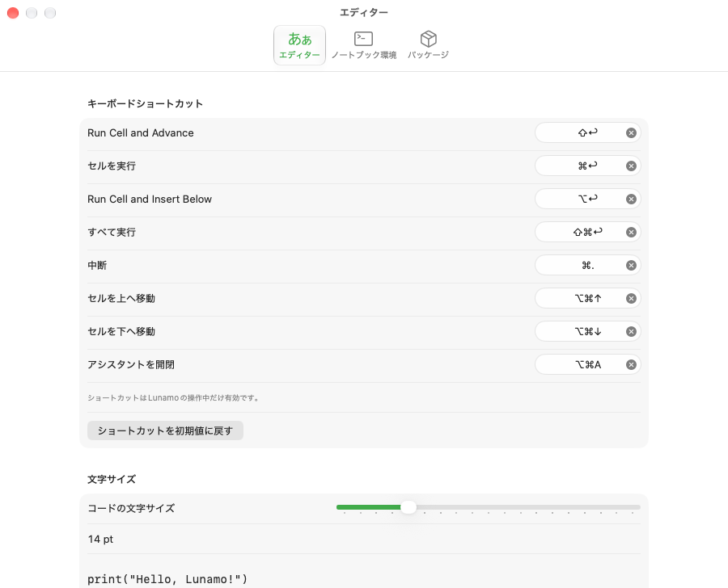

ファイル一覧
開いたフォルダのノートがサイドバーに並びます。一覧からノートを選ぶと、同じウィンドウで編集を続けられます。

SwiftUIでつくったPythonノートエディタ。
Macでmarimoのノートを編集・実行できます。
Apple Silicon · macOS 26以降
ソースコード
開いたフォルダのノートがサイドバーに並びます。一覧からノートを選ぶと、同じウィンドウで編集を続けられます。
コードのすぐ下に、そのセルの実行結果が表示されます。サイドバーを閉じれば、コードも出力もウィンドウいっぱいに広がります。
ノートの下にターミナルが開きます。コードと実行結果を見ながら、同じウィンドウでコマンドを実行できます。
⌘ Return でセルを実行、Shift Return で次のセルに進みます。キーの割り当てと文字サイズは変更できます。

バージョンごとの変更点と、配布中のDMGを確認できます。
リリース履歴を見る ↗困ったことや、Lunamoに欲しい機能があれば教えてください。
GitHub Issuesで報告する ↗Lunamoを作っているManiのアカウントです。